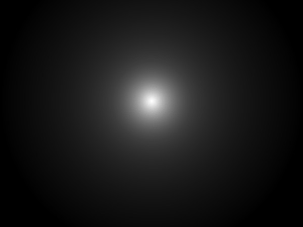
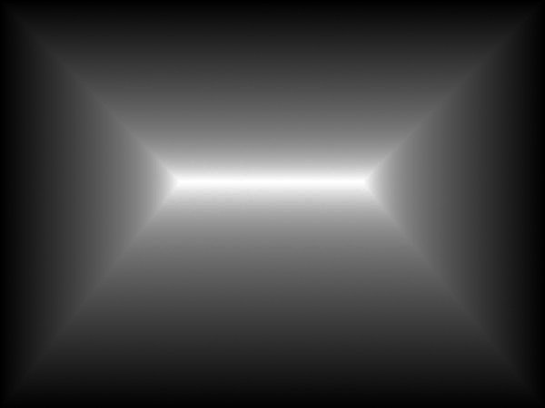
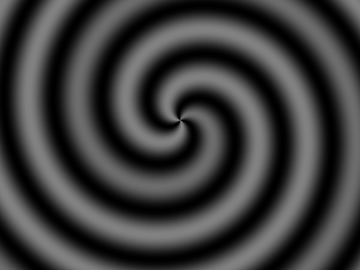

Slot controllers impose force fields that dictate the robot's motion. In a typical slot, there is a desired position rectangle (which may be a line or point), and the force imposed by the robot is proportional to the distance between the desired rectangle and the robot's actual position point.
In cases where it seems that the robot is guiding the patient's limb to a goal point, the software usually accomplishes this by either moving a desired point toward the goal, or by establishing a linear slot with where the two ends points of the line are a starting point and the goal point, and the line collapses with the back wall moving toward the goal point.
The robot has a specific desired rectangle at each point in time. The software recalculates the desired rectangle during each sample period, usually 200 times per second. These calculations create the sensation of a moving force field acting on the robot.
While the images below attempt to describe force fields visually, it is most helpful to actually feel their effects using the robots.
The illustration below shows the forces imposed by a point slot controller. The desired point is at the center of the image. The controller imposes forces pushing toward the center point, with darker values, further from the desired point, exerting greater force. Imagine a rubber band connecting you to the desired point, and the further you move from that point, the harder it tries to pull you back.


When you move the robot in a curl field, the field resists with a damping force perpendicular to the velocity of your motion. The sensation is like that of walking in a stiff crosswind or trying to move in a fluid whirlpool. In a clockwise curl field, when you try to move forward in any direction, you will feel a force pushing you to the right. The faster you move forward, the greater the force pushing you to the right. Imagine yourself always at the center of a field that rotates clockwise around you at a speed proportonal to your velocity. In a curl controller, as in a damping controller, there is no force exerted when the robot is not moving.
